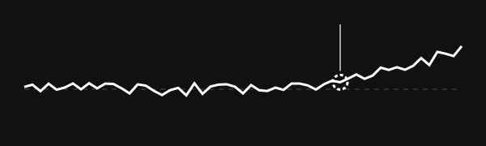
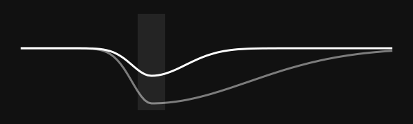
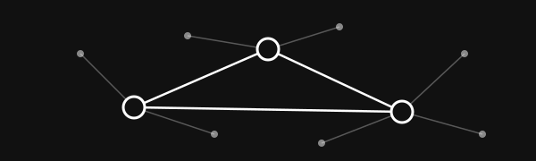

您好,
我是康杰
Hello, I'm Jie Kang.
I seek to solve.
To see. To serve.
I'm a Lecturer in Applied Statistics in the School of Mathematics and Statistics at the University of Sydney. My research asks why individuals respond differently to biological and environmental challenges. I develop statistical methods for genomic prediction, early detection of health changes and quantifying resilience, across agriculture and health.
"In God we trust. All others must bring data."
- William Edwards Deming
Applied Statistician
Information -> Insight -> Intent
Quantitative Geneticist
Let's change the world!
"G"
My nickname. Something I try to define.
Research
Why do individuals respond differently to biological and environmental challenges?
See my publicationsWork + Life
Genomic prediction
Statistical methods that turn genomic data into better predictions of performance, health and resilience.

Early detection
Using routinely collected data to spot health changes early, before they become visible problems.

Resilience to stress
Measuring why some individuals cope with biological and environmental challenges better than others.

Across three countries
Working across agriculture and health with partners in Australia, New Zealand and Ireland.